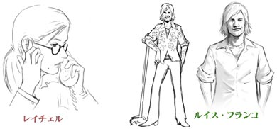
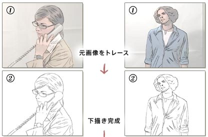
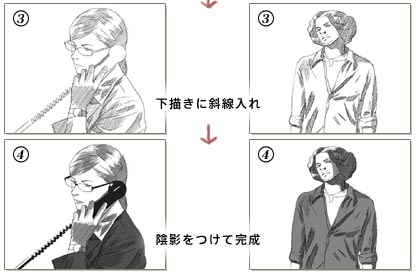
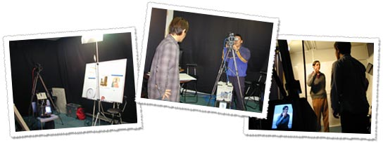

N.O.M N.O.M |
「ウィッシュルーム 天使の記憶」に登場するキャラクターたちは、すごく活き活きとしていますよね。特にキャラクターの動きが特徴的ですが、これはなんと言う技術なのでしょうか。 |
 |
 金崎 金崎 |
今回のキャラクターアニメーションは、ペンシルアニメといって、手描き感と絶えずぶれて、動いているところに特徴があります。手法的にはロトスコープという手法使って、実写映像をトレース（＝書き写す）して作っていきます。 |
|
| N.O.M |
具体的には、どうやって作っていくのでしょうか？ |
|
| 金崎 |
まずは鈴木の企画を元に登場人物のラフイメージを考えます。例えばレイチェルですとキャリアウーマン、フランコは軽そうな若者といった具合です。 |
|  |
| |
次にそのラフイメージからキャラクターデザインを作り上げ、そのイメージに近いモデルさんを探してそのキャラクターを演じた映像を撮影します。（衣装や小道具はこちらで準備）
撮った映像を連番データに落とし込んで、それらをトレースして描き起こしていくのですが、アニメーションなので、ひとりの人物につき何枚もトレースする必要があります。最後に、できあがったデータをゲーム中で表示できるようにすればできあがりです。 |
|

 |
|
| N.O.M |
何枚もトレースするとなると、かなり大変な作業になりそうですね。 |
|
| 金崎 |
そうですね。ただやはり、ペンシルアニメは普通のアニメーションと違い、非常に味わいのある表現になるんです。また、動きにリアリティをもたせるという意味では、やはり実写を撮って、その人物（顔は変えるんですが）の動きをトレースするのが一番なんですね。
ハードボイルドな世界観を描くという点からも、いわゆるアニメーション的なケレン味のある動きじゃなくて、実写に基づいたペンシルアニメの方がより効果的だと思います。トレース元になった外国人モデルさんから、キャラクターの持つ雰囲気なんかも影響を受けますし、服のしわや影の入り方とかもリアルになる。非常にハードボイルド感漂う仕上がりになったと思います。 |
|  |
|
| N.O.M |
なるほど。非常に興味深いお話、ありがとうございました。 |